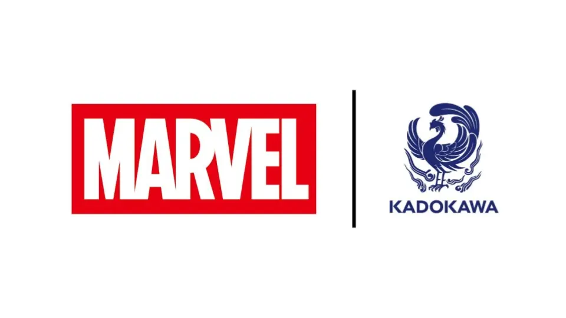

Manga creator tokitokoro (Lynx, River in Me, Jeff the Land Shark) confirmed on X/Twitter on Saturday that Marvel Comics is partnering with Kadokawa for upcoming manga adaptations. tokitokoro shared several designs of Spider-Man, Daredevil, and Punisher on Saturday, and confirmed serialization will start before the end of the year.
News outlet Bleeding Cool stated Marvel first announced the news at the Marvel Fanfare panel at San Diego Comic-Con on Saturday. The outlet stated the collaboration will include "five original manga volumes." tokitokoro's work is titled Spider-Man of Shibuya, according to the outlet.